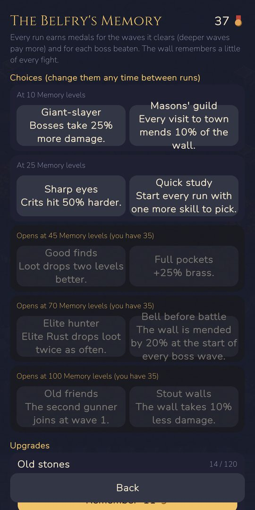

The Belfry's Memory
How medals are earned and the permanent upgrades, keystones and Marching orders they buy between runs.

On this page
Note The Belfry Gun is in closed testing. Costs, caps and keystones are today's and may change.
Your gun, loot and brass never survive a run. The Belfry's Memory is the exception: a small set of deep, permanent upgrades bought with medals. It is how a player who loses at wave 25 today can, many runs from now, reach wave 200.
Earning medals
Every run pays medals for the waves it cleared:
- A fifth of a medal per wave, plus a little extra for depth (deeper waves pay more).
- One medal for every boss beaten.
Medals are rounded down at the end of the run. A run that clears 30 waves and three bosses pays about 10 medals. Bosses are worth more than they look, so aim for the tenth wave.
The upgrades
Each level costs a little more than the last (the first level costs the base amount, and each further level adds the step). Values below are medals.
| Memory | Effect per level | Max level | First level | Cost rise per level |
|---|---|---|---|---|
| Old stones | x1.07 wall health | 120 | 2 | +0.6 |
| Gunsmith's care | x1.07 damage | 160 | 2 | +0.6 |
| A full purse | Start each run with more brass | 20 | 3 | +1.5 |
| Old hand | Start each run with a skill to pick | 4 | 12 | +12 |
| Lucky coin | +4% loot luck | 30 | 4 | +1 |
| The moth's favour | The moth mends 10% more | 4 | 8 | +8 |
| Marching orders | Start runs 10 waves further on, up to half your best wave, with a gun to match | 15 | 6 | +4 |
| Brass sense | +4% brass found | 15 | 5 | +2 |
| Steady eye | +0.3% crit chance | 20 | 6 | +2 |
| Quick hands | +1% fire rate | 20 | 6 | +2 |
Marching orders
The most unusual one. Each level starts your next runs ten waves further up the hill (never past half of your best wave so far), with a gun, brass and levels to match. It saves you the slow early waves once you have beaten them many times.
Keystones
At 10, 25, 45, 70 and 100 total Memory levels, a keystone opens. Pick one of two. You can change your mind between runs.
| At total levels | Choice A | Choice B |
|---|---|---|
| 10 | Giant-slayer: bosses take 25% more damage | Masons' guild: every visit to town mends 10% of the wall |
| 25 | Sharp eyes: crits hit 50% harder | Quick study: start every run with one more skill to pick |
| 45 | Good finds: loot drops two levels better | Full pockets: +25% brass |
| 70 | Elite hunter: elite Rust drops loot twice as often | Bell before battle: the wall is mended by 20% at the start of every boss wave |
| 100 | Old friends: the second gunner joins at wave 1 | Stout walls: the wall takes 10% less damage |
Tip Early on, the cheap levels of Old stones and Gunsmith's care are a great first buy. They make every single run a little less brutal.
Note Memory is permanent for you only. It does not touch the Rust: the Rust still grows by about 11% a wave, no matter how well you have remembered.
Back to Unlocks and characters, or on to Tips for deeper waves.